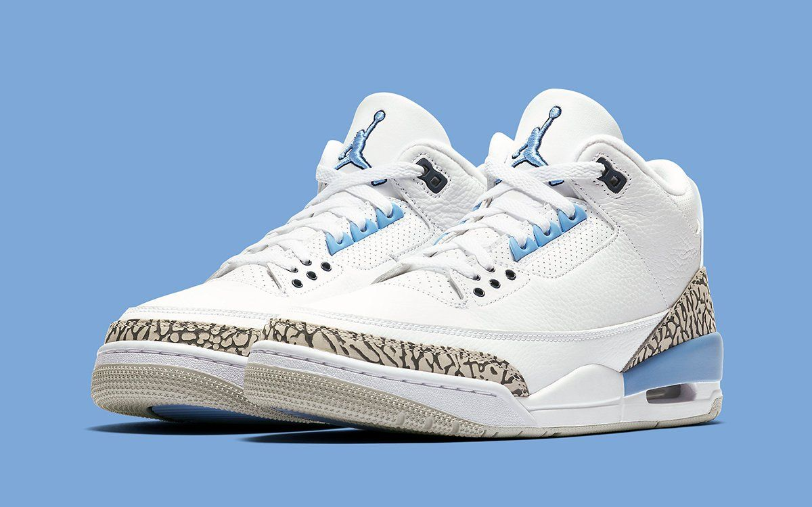

My Collection
I've built a 70+ pair sneaker collection focused on market trends and valuation. For me, sneakers are more than just shoes — they're a market. Understanding release hype, resale premiums, and long-term value retention is something I genuinely study. My prized possession? The Air Jordan 3 UNC — a clean University Blue colorway that never goes out of style.
My Sneaker Breakdown
- Jordan Brand
- Air Jordan 3 UNC — my favorite pair
- Air Jordan 1 Retro High OG
- Air Jordan 4 Military Black
- Nike
- Nike SB Dunk Low Pro
- Nike Air Max 90
- Nike Air Force 1 Low
- Adidas
- Yeezy 350 V2 Zebra
- Adidas Samba OG
- New Balance
- New Balance 990v4 Made in USA
- New Balance 2002R
My Favorite Pair
The Air Jordan 3 "UNC" — white leather, University Blue accents, and a clean cement grey sole. Released in limited quantities, it sits above retail on the resale market and only gets better with age.

Air Jordan 3 "UNC" — University Blue colorway
Air Jordan 3 UNC — Full Review
WearTesters breaks down the Air Jordan 3 UNC in full detail — materials, fit, comfort, and resale potential. This is one of the most thorough reviews of the shoe out there.
Sneaker Resale Market Data (StockX)
The interactive dashboard below compares Off-White x Nike and Adidas Yeezy resale data from StockX — tracking average sale prices over time and regional sales volume across the U.S. Hover over the data points to explore the numbers.

Sneaker Value Tracker
Want to know what your sneakers are worth on the resale market? Use the tool below to estimate resale value based on brand, model, and condition.